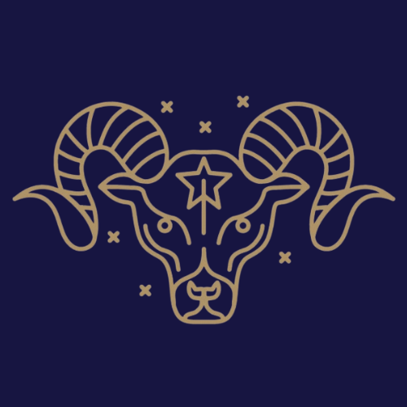
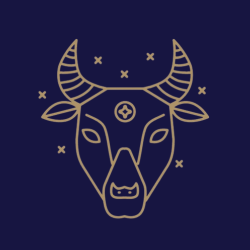
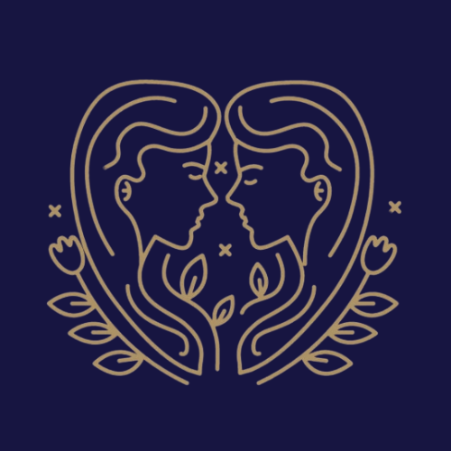
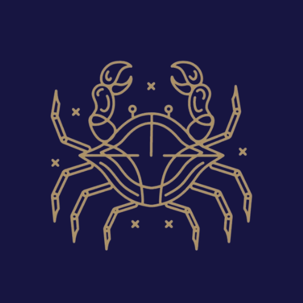
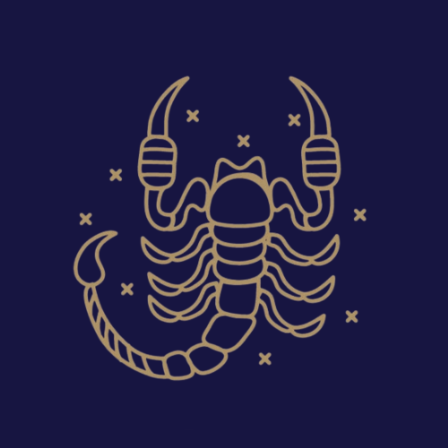
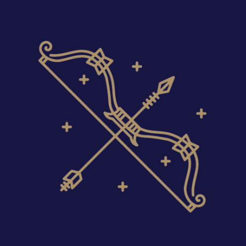
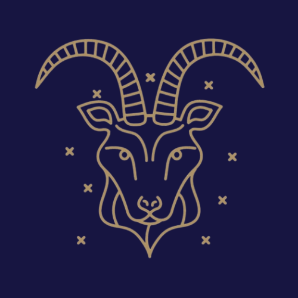
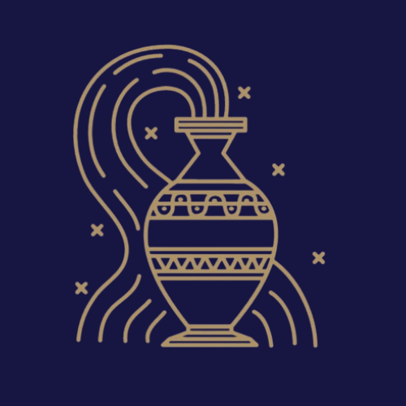
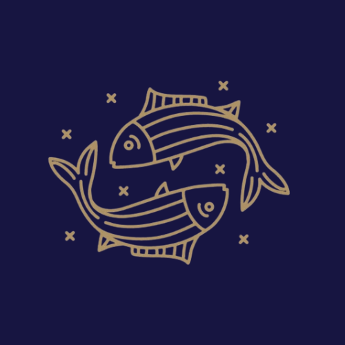

Explore the twelve signs of the zodiac
The Western Zodiac, also known as Western Astrology, is one of the oldest systems of astrology in the world. It has its roots in ancient Babylon and was later developed by the Greeks and Romans into the system we know today. The word "zodiac" comes from the Greek word zoidiakos kyklos, which means "circle of animals."
The zodiac is a belt of sky that extends about 8 degrees on either side of the path that the Sun appears to travel over the course of a year. This path is called the ecliptic. Ancient astronomers divided this belt into 12 equal sections of 30 degrees each, and each section was named after the constellation found within it.
Each of the 12 zodiac signs is associated with a specific time of year, a ruling planet, an element, and a modality. Your zodiac sign, also called your sun sign, is determined by the position of the Sun at the time of your birth. Western Astrology believes that the position of the Sun, Moon, and planets at the time of a person's birth can influence their personality and life.
The 12 signs are divided into four elements: Fire (Aries, Leo, Sagittarius), Earth (Taurus, Virgo, Capricorn), Air (Gemini, Libra, Aquarius), and Water (Cancer, Scorpio, Pisces). They are also grouped by three modalities: Cardinal signs start each season, Fixed signs fall in the middle of each season, and Mutable signs end each season.

March 21 – April 19
Aries is the first sign of the zodiac and the first of the fire signs. People born under Aries are bold, energetic, and fiercely independent. Ruled by Mars, the planet of war and action, Aries individuals are natural-born leaders who love taking charge. They are the ones who dive headfirst into new projects and challenges without a second thought, which is why they are often the first to get things started but sometimes the last to finish them.
Aries is a Cardinal sign, meaning it kicks off a new season (spring in the Northern Hemisphere) and represents new beginnings. Aries people are passionate, motivated, and confident leaders who build community with their cheerful energy and determination. On the flip side, they can be moody, short-tempered, and impulsive, often acting before thinking things through.

April 20 – May 20
Taurus is the second sign of the zodiac and the first of the earth signs. Ruled by Venus, the planet of love and beauty, Taurus individuals have a deep appreciation for the finer things in life. They are drawn to comfort, luxury, and anything that pleases the senses, whether that is good food, beautiful art, or relaxing music.
As a Fixed sign, Taurus is known for being incredibly determined and persistent. Once a Taurus sets their mind on something, almost nothing can stop them. This same quality, however, can also make them one of the most stubborn signs in the zodiac. They are reliable, hardworking, and patient, and they make some of the most loyal friends and partners you will ever find.

May 21 – June 20
Gemini is the third sign of the zodiac and the first of the air signs. Ruled by Mercury, the planet of communication and intellect, Geminis are quick-witted, curious, and endlessly adaptable. They are represented by the twins, which reflects their dual nature and ability to see multiple sides of any situation.
Geminis are social butterflies who thrive on conversation, ideas, and variety. They get bored easily and need constant mental stimulation to stay engaged. This is why they often juggle multiple interests, hobbies, and friend groups at the same time. While this makes them fascinating and fun to be around, it can also make them seem inconsistent or hard to pin down. As a Mutable sign, Gemini is flexible and always ready to change course.

June 21 – July 22
Cancer is the fourth sign of the zodiac and the first of the water signs. Ruled by the Moon, which governs emotions, intuition, and the subconscious, Cancer is one of the most emotionally deep and sensitive signs in the entire zodiac. Just like the Moon goes through phases, Cancers can shift moods quickly depending on the energy around them.
Cancer is a Cardinal sign, meaning they are initiators who like to take charge, especially when it comes to protecting the people they love. They are deeply attached to home, family, and their personal history. Cancers are known for their nurturing nature and their ability to make others feel safe and cared for. However, they can also be overly protective, clingy, and prone to withdrawing into their shell when they feel hurt.
July 23 – August 22
Leo is the fifth sign of the zodiac and the second of the fire signs. Ruled by the Sun itself, Leo is the most radiant and attention-commanding sign in the zodiac. Just as the Sun is the center of our solar system, Leos naturally draw people toward them with their warmth, confidence, and magnetic energy.
Leo is a Fixed sign, which means they are determined, loyal, and incredibly consistent once they have committed to something or someone. They are natural performers and leaders who love being in the spotlight. Leos are also fiercely protective of the people they love. Their biggest weaknesses are their pride and their tendency to be a little too dramatic when things do not go their way.
August 23 – September 22
Virgo is the sixth sign of the zodiac and the second of the earth signs. Ruled by Mercury, the planet of communication and analysis, Virgos are sharp, methodical, and incredibly detail-oriented. They notice things that most people overlook, which makes them excellent problem solvers and some of the most helpful people you will ever meet.
As a Mutable sign, Virgo is adaptable and always willing to improve. They hold themselves to very high standards and are constantly working to become better. This perfectionist streak can sometimes turn into self-criticism or anxiety when things are not exactly right. Virgos show love through acts of service, which means they express care by doing things for others rather than grand gestures.
September 23 – October 22
Libra is the seventh sign of the zodiac and the second of the air signs. Ruled by Venus, the planet of love, beauty, and harmony, Libra is the sign most concerned with balance, fairness, and relationships. The symbol of the scales perfectly represents their constant search for equilibrium in all areas of life.
As a Cardinal sign, Libra is an initiator who loves to bring people together. They are charming, gracious, and naturally gifted at seeing multiple perspectives, which makes them excellent mediators. However, this same quality makes it very difficult for them to make decisions. Libras can spend so long weighing every option that they end up stuck in indecision. They dislike conflict and will often avoid confrontation even when it is necessary.

October 23 – November 21
Scorpio is the eighth sign of the zodiac and the second of the water signs. Ruled by Pluto, the planet of transformation, power, and the underworld, Scorpio is one of the most intense, mysterious, and complex signs in the zodiac. They are driven by a deep desire to understand the hidden truths of the world and of human nature.
As a Fixed sign, Scorpio is incredibly determined and focused. When they set their sights on a goal, they pursue it with relentless energy. They feel emotions very deeply but rarely show them on the surface, which gives them an air of mystery. Scorpios are fiercely loyal to the people they trust, but they never forget a betrayal. They are known for their ability to completely transform themselves and reinvent who they are throughout their lifetime.

November 22 – December 21
Sagittarius is the ninth sign of the zodiac and the third of the fire signs. Ruled by Jupiter, the largest planet in the solar system and the planet of expansion, luck, and wisdom, Sagittarius is the eternal explorer and philosopher of the zodiac. They are always searching for meaning, truth, and new experiences.
As a Mutable sign, Sagittarius is highly adaptable and thrives on change and freedom. They love travel, learning, and meeting new people from different cultures and backgrounds. They are honest to a fault, which sometimes comes across as blunt or tactless. Sagittarians are optimistic and enthusiastic, and their energy is contagious. Their biggest challenge is finishing what they start, as their love for new adventures can make them restless and commitment-averse.

December 22 – January 19
Capricorn is the tenth sign of the zodiac and the third of the earth signs. Ruled by Saturn, the planet of discipline, structure, and responsibility, Capricorn is one of the most ambitious and hardworking signs in the zodiac. They are the builders and achievers who are always playing the long game.
As a Cardinal sign, Capricorn is driven to initiate and lead, particularly in professional and practical matters. They are patient, strategic, and willing to put in years of effort to reach their goals. While other signs may look for shortcuts, Capricorn believes that anything worth having is worth working for. On the downside, they can be overly serious, rigid, and sometimes come across as cold or distant, especially when they are focused on their ambitions.

January 20 – February 18
Aquarius is the eleventh sign of the zodiac and the third of the air signs. Despite its name containing the word "water," Aquarius is actually an air sign, ruled by Uranus, the planet of innovation, rebellion, and sudden change. Aquarius is the visionary of the zodiac, always thinking ahead and imagining a better future for humanity.
As a Fixed sign, Aquarius is surprisingly stubborn for someone so open-minded. They commit deeply to their beliefs and ideals. Aquarians are known for being original, unconventional, and fiercely independent. They march to the beat of their own drum and have little patience for rules they see as outdated or unjust. While they care deeply about humanity as a whole, they can sometimes struggle with one-on-one emotional intimacy, often coming across as detached or aloof in personal relationships.

February 19 – March 20
Pisces is the twelfth and final sign of the zodiac and the third of the water signs. Ruled by Neptune, the planet of dreams, illusions, and spirituality, Pisces is the most mystical and emotionally deep sign in the entire zodiac. Because it is the last sign, Pisces is said to carry within it a piece of every sign that came before, making them uniquely empathetic and understanding of all types of people.
As a Mutable sign, Pisces is flexible, go-with-the-flow, and easily adapts to the people and environment around them. They are deeply creative, often drawn to music, art, poetry, and other forms of self-expression. Pisces feel everything intensely and have a natural gift for understanding other people's emotions. Their challenge is that they can sometimes lose themselves in fantasy, have trouble with boundaries, and be taken advantage of due to their trusting and giving nature.